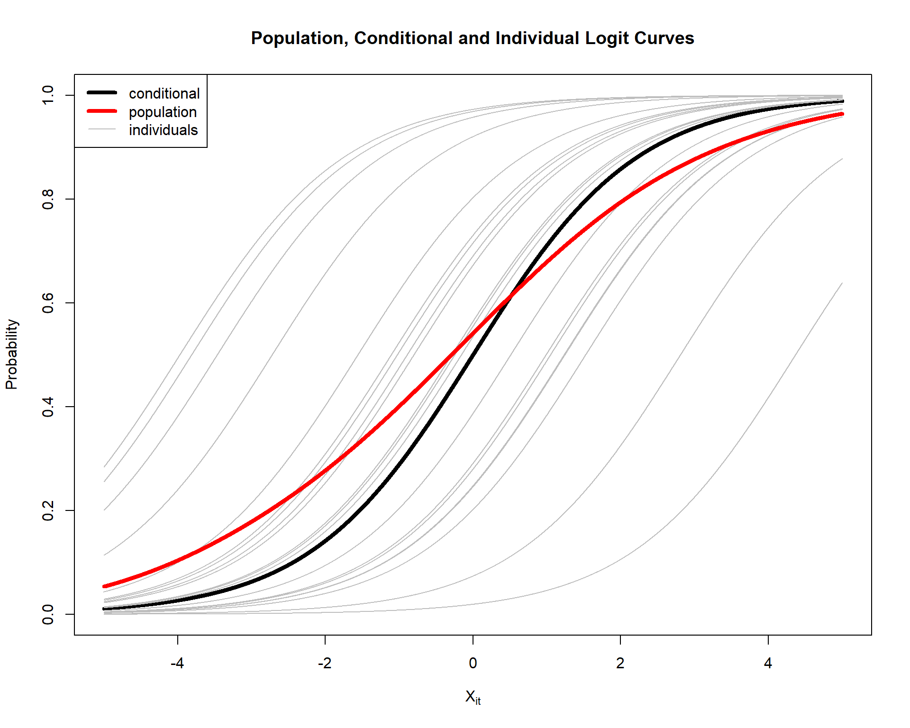
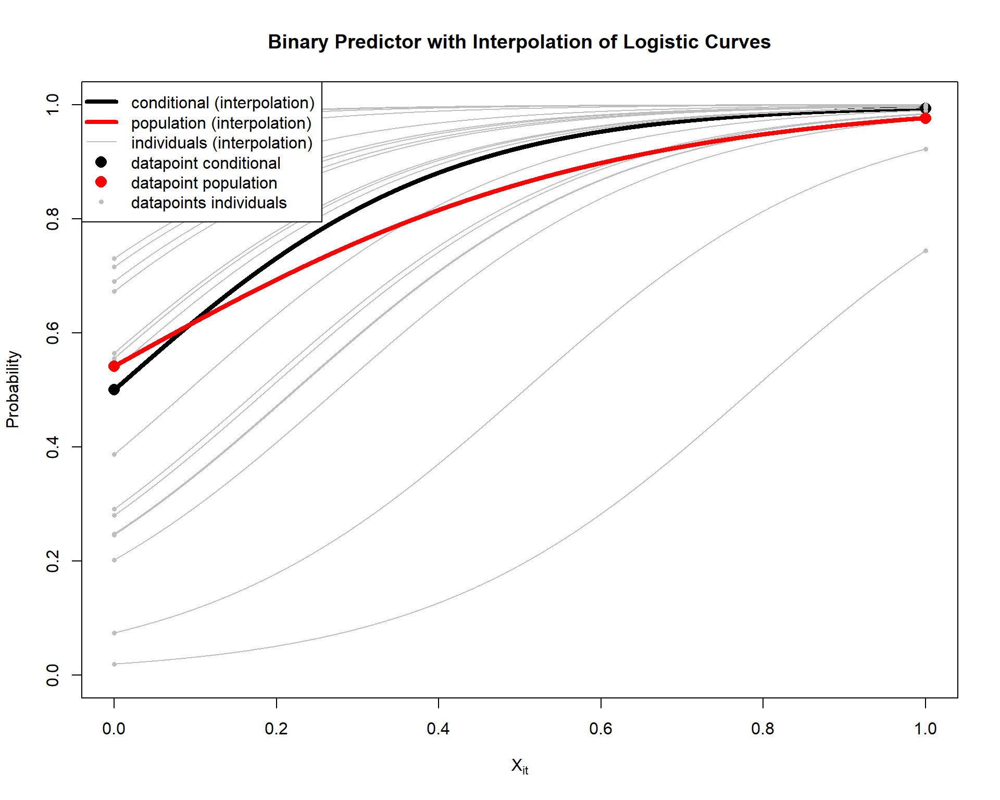
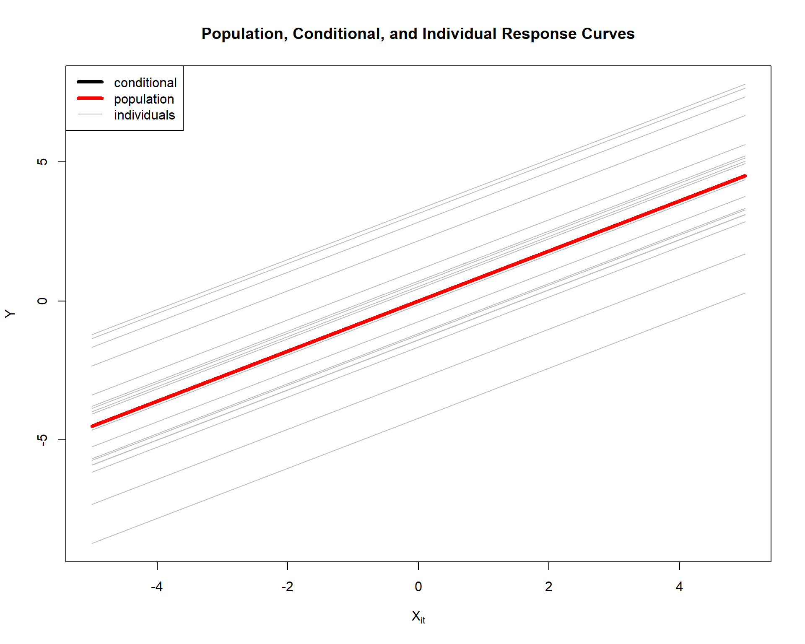
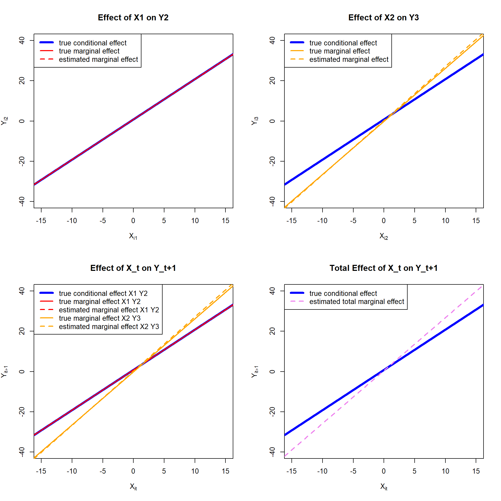

library(tidyverse)
library(here)
library(geepack)generalized mixed linear model: marginal versus conditional effects
In this document, we will shed light on an issue that is well-known in the field of generalized linear mixed models (GLMMs), namely the discrepancy between population-averaged (PA; i.e., marginal) and subject-specific (SS; i.e., conditional-on-the-random-effect) interpretations of a fixed slope when the link function is non-linear. Note that subject-specific does not implicate the presence of a random slope. The main distinction between SS and PA models is whether the regression coefficients describe an individual’s or the average population response to changing \(x\) (Zeger, Liang, and Albert 1988). An excellent example between the two is given by Zeger, Liang, and Albert (1988):
“For example, if \(x_{it}\), indicates whether subject \(i\) smokes at time \(t\), and Yit is the presence/absence of respiratory infection, the PA model estimates the difference in infection rates between smokers and nonsmokers; the SS model estimates the expected change in an individual’s probability of infection given a change in smoking status.” (p. 1051)
This document will explain why a discrepancy between the PA and SS interpretations of the fixed slope arises when the link function is non-linear. In this treatment, we will focus on very simple GLMMs with only one predictor and a random intercept.
Generalized Mixed Linear Model with Non-linear Logit Function
In this document, we will reproduce the figure made by Dimitri Rizopoulos in de course CE08 (slide 321), where the generalized mixed linear model (GLMM) with a non-linear logit function results in a discrepancy between the marginal and conditional relationships (see also Zeger, Liang, and Albert (1988) for the similar and original treatment). Let us consider the following GLMM
\[ \text{log} \frac{\pi_{it}}{1-\pi_{it}} = \beta_0 + \beta_1 X_{it} + b_{0i} + \epsilon_{it} \quad b_{0i} \sim \mathcal{N}(0,\sigma_{b0}^2) \]
Where \(\pi_{it} = Pr(Y_{it} = 1)\) the probability of a positive response for subject \(i\) at time \(t\), \(Y_{it}\) is the binary response variable, \(X_{it}\) is the continuous covariate, \(A_{it}\) is the binary treatment indicator, and \(b_{0i}\) is the random intercept. The fixed effects are \(\beta_0\) and \(\beta_1\) for the intercept and the continuous covariate. The random intercept \(b_{0i}\) and the error term \(\epsilon_{it}\) are assumed to be normally distributed with mean zero and variance \(\sigma_{b0}^2\) and \(\sigma_{\epsilon}^2\), respectively.
We specify the following parameter values
- \(\beta_0 = 0\)
- \(\beta_1 = 0.5\)
- \(\sigma_{b0}^2 = 0.5\)
- \(\sigma_{\epsilon}^2 = 0\)
For simplicity, this model does not include a treatment effect \(A_{it}\) nor exogenous noise \(\epsilon_{it}\). Now we will simulate data from this model and directly infer the relationships between the continuous covariate \(X_{it}\) and the probability of a positive response \(\pi_{it}\).
set.seed(123) # For reproducibility
# Parameters
beta_0 <- 0 # for simplicity
beta_1 <- 0.9
sigma_b0 <- sqrt(4)
n_individuals <- 20 # Number of individuals to plot
X_grid <- seq(-5, 5, length.out = 10000) # Values for X_it
# Generate random intercepts for individuals
b0 <- rnorm(n_individuals, mean = 0, sd = sigma_b0)
# Conditional-level logit and probability: the mean individual (b0 = 0)
logit_conditional <- beta_0 + beta_1 * X_grid + 0 # expected value
pi_conditional <- 1 / (1 + exp(-logit_conditional))
# Individual-specific logits and probabilities
logit_individuals <- sapply(b0, function(b) beta_0 + beta_1 * X_grid + b) # expected value
pi_individuals <- 1 / (1 + exp(-logit_individuals))
# Population-level logit and probability: average probabilities across individuals
pi_population <- rowMeans(pi_individuals)
# save the upcoming plot
# png("figure/fig-marginal-vs-conditional.png", width = 1200, height = 1000, res = 150)
# Plot the conditional-level curve
plot(X_grid, pi_conditional, type = "l", lwd = 4, col = "black",
ylim = c(0, 1), xlim = c(-5, 5), xlab = expression(X[it]), ylab = "Probability",
main = "Population, Conditional and Individual Logit Curves")
# Add individual curves (grey lines)
for (i in 1:n_individuals) {
lines(X_grid, pi_individuals[, i], col = "grey", lwd = 1)
}
# add the population-level curve (red line)
lines(X_grid, pi_population, col = "red", lwd = 4)
# Add a legend
legend("topleft", legend = c("conditional", "population", "individuals"),
col = c("black", "red", "grey"), lty = c(1, 1, 1), lwd = c(4, 4, 1))
# dev.off()

When we estimate the GLMM with the log link function, we obtain the conditional-on-the-random effects interpretation of fixed-effects regression coefficients (i.e., the effects of covariates on changes in an individual’s transformed mean response). This is directly opposed by marginal models such as GEE, where “population averages are the targets of inference” (Rizopoulos, CE08, p. 331)
Let’s now take the scenario where the predictor \(X_{it}\) is a binary variable.
set.seed(123) # For reproducibility
# Parameters
beta_0 <- 0
beta_1 <- 5
sigma_b0 <- sqrt(4)
n_individuals <- 20 # Number of individuals to plot
# Continuous logistic predictor
X_grid_cont <- seq(0, 1, length.out = 10000)
# Binary predictor
X_grid_bin <- c(0, 1)
# Generate random intercepts for individuals
b0 <- rnorm(n_individuals, mean = 0, sd = sigma_b0)
# Continuous predictor: Compute conditional and individual probabilities
logit_conditional <- beta_0 + beta_1 * X_grid_cont
pi_conditional <- 1 / (1 + exp(-logit_conditional))
logit_individuals_cont <- sapply(b0, function(b) beta_0 + beta_1 * X_grid_cont + b)
pi_individuals_cont <- 1 / (1 + exp(-logit_individuals_cont))
pi_population_cont <- rowMeans(pi_individuals_cont)
# Binary predictor: Compute probabilities
logit_individuals_bin <- sapply(b0, function(b) outer(beta_0 + beta_1 * X_grid_bin, b, "+"))
pi_individuals_bin <- 1 / (1 + exp(-logit_individuals_bin))
pi_population_bin <- rowMeans(pi_individuals_bin)
# Plot the continuous logistic curve
plot(X_grid_cont, pi_conditional, type = "l", lwd = 4, col = "black",
ylim = c(0, 1), xlim = c(0, 1), xlab = expression(X[it]), ylab = "Probability",
main = "Binary Predictor with Interpolation of Logistic Curves")
# Add individual curves (grey lines) for continuous logistic function
for (i in 1:n_individuals) {
lines(X_grid_cont, pi_individuals_cont[, i], col = "grey", lwd = 1)
}
# Add population-level curve (red line) for continuous logistic function
lines(X_grid_cont, pi_population_cont, col = "red", lwd = 4)
# Overlay binary predictor points (black and red)
points(X_grid_bin, 1 / (1 + exp(-(beta_0 + beta_1 * X_grid_bin))), col = "black", pch = 16, cex = 1.5)
for (i in 1:n_individuals) {
points(X_grid_bin, pi_individuals_bin[, i], col = "grey", pch = 16, cex = 0.6)
}
points(X_grid_bin, pi_population_bin, col = "red", pch = 16, cex = 1.5)
# Add a legend
legend("topleft", legend = c("conditional (interpolation)", "population (interpolation)", "individuals (interpolation)",
"datapoint conditional", "datapoint population", "datapoints individuals"),
col = c("black", "red", "grey", "black", "red", "grey"),
lty = c(1, 1, 1, NA, NA, NA),
pch = c(NA, NA, NA, 16, 16, 16),
lwd = c(4, 4, 1, NA, NA, NA), pt.cex = c(NA, NA, NA, 1.5, 1.5, 0.6))

When we fit a GLMM with a log-link function and the variance of the random intercept is non-zero, the fixed effects are interpreted according to the subject-specific interpretation. As a result, GLMMs are most useful when the main scientific objective is to make inferences about individuals rather than population averages.
Mixed Linear Model: Generalized Linear Mixed Model with Identity Link Function
Let us now consider a simple mixed linear model with a continuous outcome variable \(Y_{it}\) and a continuous covariate \(X_{it}\), where the random intercept \(b_{0i}\) is normally distributed with mean zero and variance \(\sigma_{b0}^2\). The model is given by
\[ Y_{it} = \beta_0 + \beta_1 X_{it} + b_{0i} + \epsilon_{it} \quad b_{0i} \sim \mathcal{N}(0,\sigma_{b0}^2) \]
Where \(\epsilon_{it}\) is the error term. We will simulate data from this model and directly infer the relationships between the continuous covariate \(X_{it}\) and the outcome variable \(Y_{it}\).
set.seed(123) # For reproducibility
# Parameters
beta_0 <- 0 # Intercept
beta_1 <- 0.9 # Slope
sigma_b0 <- sqrt(4) # Standard deviation of random intercepts
n_individuals <- 20 # Number of individuals to plot
X_grid <- seq(-5, 5, length.out = 10000) # Values for X_it
# Generate random intercepts for individuals
b0 <- rnorm(n_individuals, mean = 0, sd = sigma_b0)
# create centering option
expected_b0_is_zero = TRUE
if (expected_b0_is_zero == TRUE){
b0 <- b0 - mean(b0) # Centering step
}
# Conditional-level prediction (mean individual, b0 = 0)
y_conditional <- beta_0 + beta_1 * X_grid
# Individual-specific predictions
y_individuals <- sapply(b0, function(b) beta_0 + beta_1 * X_grid + b)
# Population-level prediction (average across individuals)
y_population <- rowMeans(y_individuals)
# Save the upcoming plot
# png("figure/fig-marginal-vs-conditional-mlm.png", width = 1200, height = 1000, res = 150)
# Plot the conditional-level curve
plot(X_grid, y_conditional, type = "l", lwd = 4, col = "black",
ylim = range(y_individuals), xlim = c(-5, 5), xlab = expression(X[it]), ylab = expression(Y),
main = "Population, Conditional, and Individual Response Curves")
# Add individual curves (grey lines)
for (i in 1:n_individuals) {
lines(X_grid, y_individuals[, i], col = "grey", lwd = 1)
}
# Add the population-level curve (red line)
lines(X_grid, y_population, col = "red", lwd = 4)
# Add a legend
legend("topleft", legend = c("conditional", "population", "individuals"),
col = c("black", "red", "grey"), lty = c(1, 1, 1), lwd = c(4, 4, 1))
# dev.off()

Now, we can see that while the population-averaged and subject-specific lines are parallel to one another, they are not equivalent due to the fact that the expected value (i.e., mean) of the random intercept is not exactly zero. One way of fixing this is (1) to simulate data with a very large sample size N and only show a certain amount in the plot or (2) to simulate data with a random intercept that is exactly zero. The latter is done in the code above by centering the random intercepts. However, when the expected value of the random intercept is zero, the population-averaged and subject-specific lines are equivalent, implying that both interpretations are valid.
Mixed Linear Model with Time-Varying Endogenous Covariate
Laten we nu een ingewikkelder voorbeeld beschouwen van een MLM uit sectie 2.2 van Qian et al. (2020) inclusief een time-varying covariaat \(X_{it}\). In dit geval wordt elk individu op 2 tijdspunten geobserveerd (\(T_i = 2\)), en de covariaat op het tweede tijdspunt is de lag-1 uitkomst: \(X_{i2} = Y_{i2}\). Door de uitkomst te laggen, hebben we in wezen drie tijdspunten: \(X_{i1}\), \(X_{i2} = Y_{i2}\), en \(Y_{i3}\).
Stel dat de variabelen worden gegenereerd volgens het volgende multilevel lineare model (MLM) met een random intercept:
\[ b_i \sim N(0, \sigma_b^2), \]
\[ X_{i1} \sim N(0, \sigma_{X_1}^2) \text{ independently of } b_i, \]
\[ Y_{i2} \mid X_{i1}, b_i \sim N(\beta_0 + \beta_1 X_{i1} + b_i, \sigma_\epsilon^2), \]
\[ X_{i2} = Y_{i2}, \]
\[ Y_{i3} \mid X_{i1}, Y_{i2}, X_{i2}, b_i \sim N(\beta_0 + \beta_1 X_{i2} + b_i, \sigma_\epsilon^2). \]
Dit impliceert the conditionele relatie
\[ E[Y_{it+1} \mid X_{it}] = \beta_0 + \beta_1 X_{i1} + b_i. \]
terwijl de marginale relatie ingewikkelder is
\[ E[Y_{i2} \mid X_{i1}] = \beta_0 + \beta_1 X_{i1}. \]
\[ E[Y_{i3} \mid X_{i2}] = (1-\rho \zeta - \rho) \beta_0 + [(1-\rho\zeta) \beta_1+\rho] X_{i2}. \]
waar \(\rho = \frac{\sigma_b^2}{\sigma_b^2 + \sigma_\epsilon^2}\) en \(\zeta = \frac{\beta_1 \sigma_{X_1}^2}{\beta_1 \sigma_{X_1}^2 + \sigma_b^2 + \sigma_\epsilon^2}\) (see marginal-relationship-resource). Laten we nu weer data simuleren en zowel de marginale als conditionele relaties tussen de covariaat \(X_{it}\) en de uitkomstvariabele \(Y_{it}\) onderzoeken, maar we zetten \(\sigma^2_{\epsilon} = 0\) zodat dit niet afleidt. Let’s now simulate data from this model and directly infer the relationships between the continuous covariate \(X_{it}\) and the outcome variable \(Y_{it}\).
### Data Generation
set.seed(123)
# parameters
sigma_b = 3
sigma_X1 = 1
sigma_epsilon = 0 # let's exclude this for now
beta_0 = 0.8
beta_1 = 2
n_individuals = 100000
# generate random intercepts
simdata <- data.frame(id = 1:n_individuals,
b0 = rnorm(n_individuals, mean = 0, sd = sigma_b),
X1 = rnorm(n_individuals, mean = 0, sd = sigma_X1),
X2 = rep(NA, n_individuals),
Y2 = rep(NA, n_individuals),
Y3 = rep(NA, n_individuals))
# create a loop to compute the expected values for each individual
for (i in 1:n_individuals) {
simdata$X2[i] <- simdata$Y2[i] <- beta_0 + beta_1 * simdata$X1[i] + simdata$b0[i] + rnorm(1, mean = 0, sd = sigma_epsilon)
simdata$Y3[i] <- beta_0 + beta_1 * simdata$X2[i] + simdata$b0[i] + rnorm(1, mean = 0, sd = sigma_epsilon)
}
saveRDS(simdata, "simulation_scenarios/output/simdata_section2.2.rds")Let us check if the formulas supplied in Qian et al. (2020) can be used to retrieve the true marginal effect.
# load the simulated data
simdata <- readRDS(here("simulation_scenarios/output/simdata_section2.2.rds"))
### Compute Marginal and Conditional Effects
# parameters
sigma_b = 3
sigma_X1 = 1
sigma_epsilon = 0 # we excluded this term
beta_0 = 0.8
beta_1 = 2
# compute rho and zeta
rho = sigma_b^2 / (sigma_b^2 + sigma_epsilon^2) # should be 1, since sigma_epsilon = 0
zeta = beta_1 * sigma_X1^2 / (beta_1 * sigma_X1^2 + sigma_b^2 + sigma_epsilon^2)
# compute marginal effect
marginal_intercept_x1_y2 = beta_0
marginal_slope_x1_y2 = beta_1
marginal_intercept_x2_y3 = (1 - rho * zeta - rho) * beta_0
marginal_slope_x2_y3 = (1 - rho * zeta) * beta_1 + rhoLet us now estimate the marginal effects separately for \(Y_2\) and \(Y_3\) as well as for \(Y_t\).
### Estimate Marginal Effects
lm_y2_x1 <- lm(simdata$Y2 ~ simdata$X1)$coef
lm_y3_x2 <- lm(simdata$Y3 ~ simdata$X2)$coef
# turn the X1 and X2 variables into one column X and Y1 and Y2 into one column Y
simdata_long <- simdata %>%
# Convert to long format
pivot_longer(cols = starts_with("X"),
names_to = "time_X",
values_to = "X") %>%
pivot_longer(cols = starts_with("Y"),
names_to = "time_Y",
values_to = "Y") %>%
# Extract time indices
mutate(time_X = as.numeric(gsub("\\D", "", time_X)),
time_Y = as.numeric(gsub("\\D", "", time_Y))) %>%
# Keep only rows where time_X aligns with time_Y - 1
filter(time_X + 1 == time_Y) %>%
# Create a single time column for the current timepoint
mutate(time = time_X) %>%
# Select and rename columns
select(id, time, b0, X_lag1 = X, Y)
# estimate combined marginal effect of x on y
lm_y_xlag1 <- lm(Y ~ X_lag1, data = simdata_long)$coef
gee_ind_y_xlag1 <- geepack::geeglm(Y ~ X_lag1, id = id, data = simdata_long, family = gaussian, corstr = "independence")$coef
# these two estimation methods yield identical results for the parameter values (but not for SEs!)Let us now plot the marginal and conditional effect in separate and combined plots
### Plot Marginal and Conditional Effects
# Create separate plots for Y2 and Y3
# png("figure/fig-mlm-time-varying-covariate.png", res = 300, width = 4000, height = 2000)
par(mfrow = c(2, 2))
plot(simdata$X1, simdata$Y2, col = "blue", pch = 16, cex = 0, xlab = expression(X[i1]), ylab = expression(Y[i2]),
xlim = c(-15, 15), ylim = c(-40, 40), main = "Effect of X1 on Y2")
abline(a = beta_0, b = beta_1, col = "blue", lty = 1, lwd = 4) # true conditional effect X1 Y2
abline(reg = lm_y2_x1, col = "red", lty = 2, , lwd = 2) # estimated marginal effect X1 Y2
abline(a = marginal_intercept_x1_y2, b = marginal_slope_x1_y2, col = "red", lty = 1, lwd = 2) # true marginal effect X1 Y2
legend("topleft", legend = c("true conditional effect", "true marginal effect", "estimated marginal effect"),
col = c("blue", "red", "red"), lty = c(1, 1, 2), lwd = c(4, 2, 2))
plot(simdata$X2, simdata$Y3, col = "blue", pch = 16, cex = 0, xlab = expression(X[i2]), ylab = expression(Y[i3]),
xlim = c(-15, 15), ylim = c(-40, 40), main = "Effect of X2 on Y3")
abline(a = beta_0, b = beta_1, col = "blue", lty = 1, lwd = 4) # true conditional effect X2 Y3
abline(reg = lm_y3_x2, col = "orange", lty = 2, , lwd = 2) # estimated marginal effect X2 Y3
abline(a = marginal_intercept_x2_y3, b = marginal_slope_x2_y3, col = "orange", lty = 1, lwd = 2) # true marginal effect X2 Y3
legend("topleft", legend = c("true conditional effect", "true marginal effect", "estimated marginal effect"),
col = c("blue", "orange", "orange"), lty = c(1, 1, 2), lwd = c(4, 2, 2))
# dev.off()
# Create one plot for Y2 and Y3
# png("figure/fig-mlm-time-varying-covariate-together.png", res = 300, width = 2000, height = 2000)
# create empty plot
plot(1, type = "n", xlim = c(-15, 15), ylim = c(-40, 40), xlab = expression(X[it]), ylab = expression(Y[it+1]),
main = "Effect of X_t on Y_t+1")
# now add the marginal effects
abline(a = beta_0, b = beta_1, col = "blue", lty = 1, lwd = 4) # true conditional effect X1 Y2
abline(a = marginal_intercept_x1_y2, b = marginal_slope_x1_y2, col = "red", lwd = 2) # true marginal effect X1 Y2
abline(lm(simdata$Y2 ~ simdata$X1), col = "red", lty = 2, lwd = 2) # estimated marginal effect X1 Y2
abline(a = marginal_intercept_x2_y3, b = marginal_slope_x2_y3, col = "orange", lwd = 2) # true marginal effect X2 Y3
abline(lm(simdata$Y3 ~ simdata$X2), col = "orange", lty = 2, lwd = 2) # estimated marginal effect X2 Y3
legend("topleft", legend = c("true conditional effect X1 Y2", "true marginal effect X1 Y2", "estimated marginal effect X1 Y2", "true marginal effect X2 Y3", "estimated marginal effect X2 Y3"),
col = c("blue", "red", "red", "orange", "orange"), lty = c(1, 1, 2, 1, 2), lwd = c(4, 2, 2, 2, 2))
# create plot for the total effect of X on Y
plot(1, type = "n", xlim = c(-15, 15), ylim = c(-40, 40), xlab = expression(X[it]), ylab = expression(Y[it+1]),
main = "Total Effect of X_t on Y_t+1")
abline(a = beta_0, b = beta_1, col = "blue", lty = 1, lwd = 4) # true conditional effect X on Y
abline(reg = lm_y_xlag1, col = "violet", lty = 2, lwd = 2) # estimated total marginal effect X on Y
legend("topleft", legend = c("true conditional effect", "estimated total marginal effect"),
col = c("blue", "violet"), lty = c(1, 2), lwd = c(4, 2))
# dev.off()

In Figure 4 and Table 1 we can see that the true and estimated marginal effects are equivalent to the true conditional effects for the relationship between \(X_{i1}\) and \(Y_{i2}\), but not for the relationship between \(X_{i2}\) and \(Y_{i3}\). This is due to the endogeneity of the covariate of \(X_{i2}\), which implies dependence on the random intercept and, in turn, \(E[b_i \mid X_{it}]\) is nonzero. What is interesting, however, is the discrepancy between the computed (through the formula of Qian et al. (2020)) and estimated (through linear regression) marginal intercept for \(Y_{i2}\) and \(Y_{i3}\); and the alignment of the slope values.
| specified_conditional_effect | true_marginal_effect | estimated_marginal_effect | |
|---|---|---|---|
| intercept X1 Y2 | 0.8 | 0.800 | 0.803 |
| slope X1 Y2 | 2.0 | 2.000 | 1.992 |
| intercept X2 Y3 | 0.8 | -0.145 | 0.241 |
| slope X2 Y3 | 2.0 | 2.636 | 2.691 |
In Table 2 we can see that the estimated marginal effects differ from the true conditional effects for the relationship between \(X_{it}\) and \(Y_{it+1}\). This is again due to the fact that the expected value of the random intercept given the covariate is nonzero. In addition, it may be observed that the linear regression and the GEE with working independence yield the same parameter estimates, which is unsurprising given the independence of the observations and lack of random effects.
| specified_conditional_effect | lm_est_marginal_effect | gee_ind_est_marginal_effect | |
|---|---|---|---|
| intercept X_t Y_t+1 | 0.8 | 0.547 | 0.547 |
| slope X_t Y_t+1 | 2.0 | 2.626 | 2.626 |
References
Zeger, Scott L., Kung-Yee Liang, and Paul S. Albert. 1988. “Models for Longitudinal Data: A Generalized Estimating Equation Approach.” Biometrics 44 (4): 1049–60. https://doi.org/10.2307/2531734.